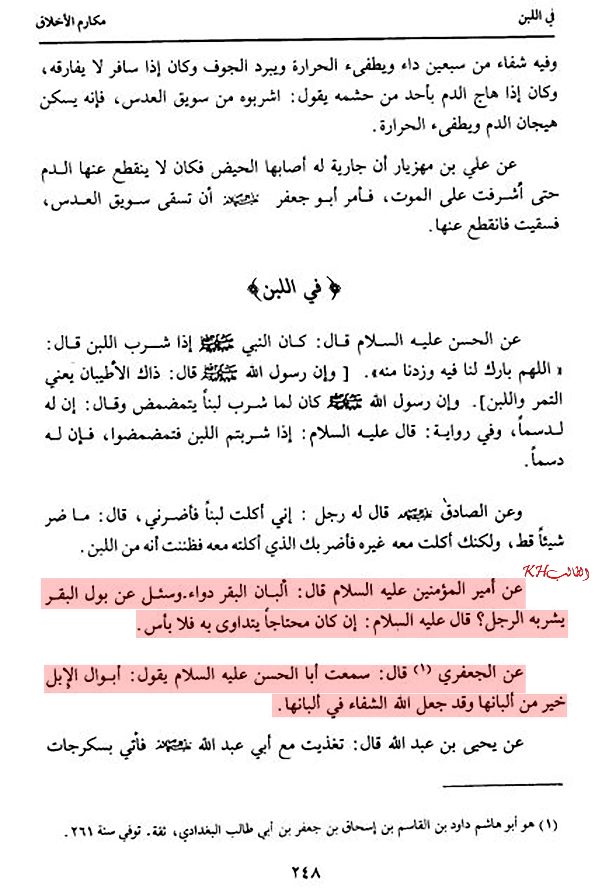
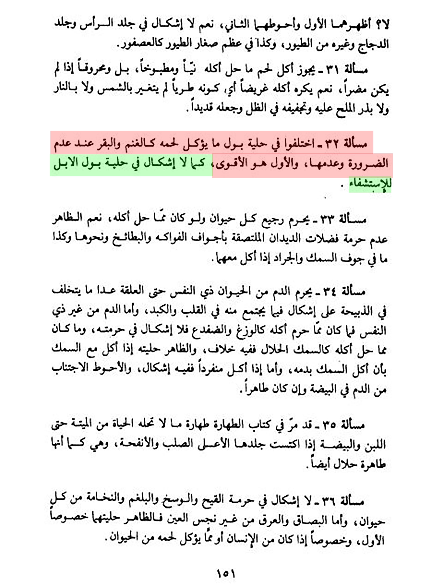

Camel urine in Shiism
Home
About
Contact
 Abu Jafari said: Í héàd Àbù Hàśáñ, śáÿ: 'Thè Ćàmèl píss is more benificial than its dairy products  Ayatollah Khomeni: There is no problem with regards of drinking camel urine for the sake of seeking cure.